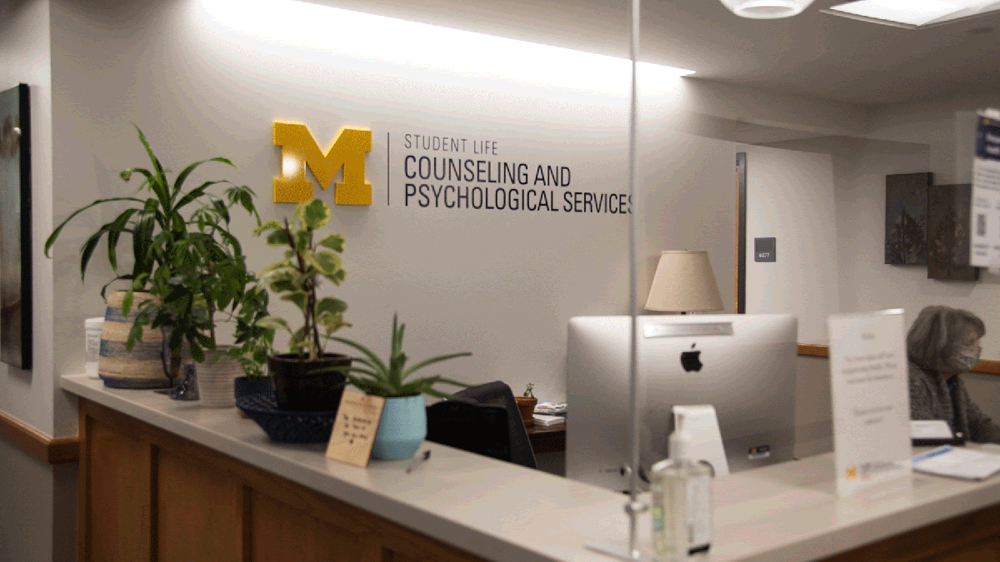
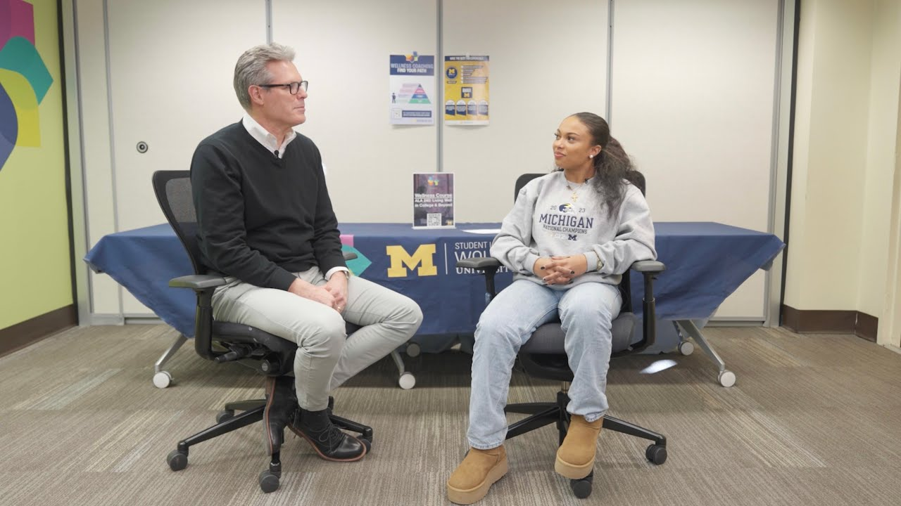
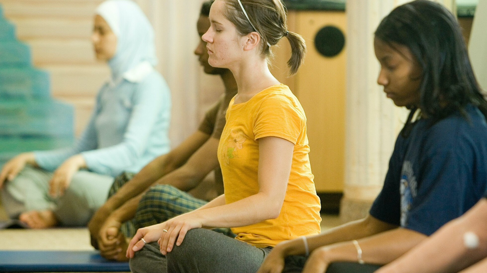
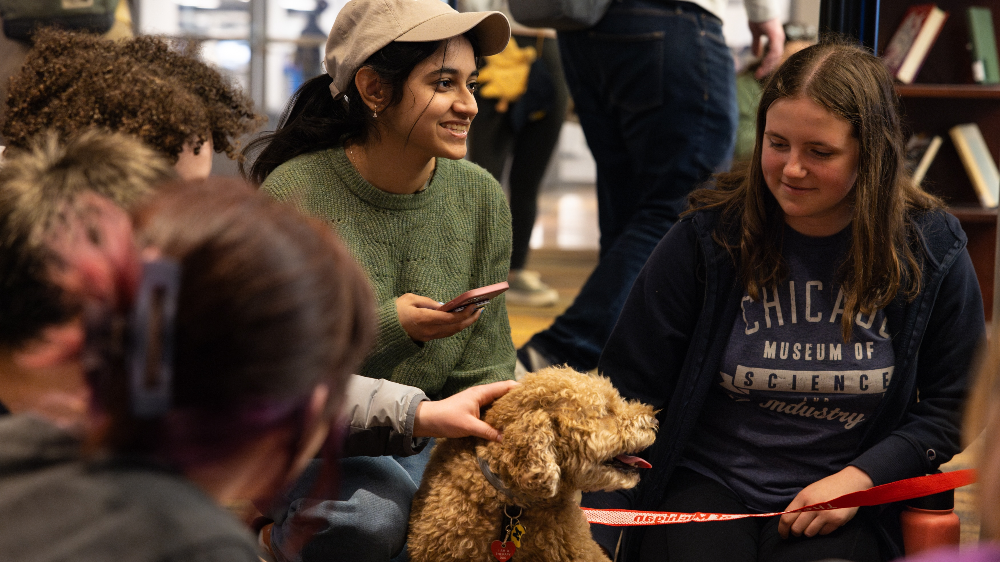

Student Success Portal
Welcome to the UM Grad Success Navigator!
Your Comprehensive Guide to Resources for Graduate School Success
This guide is set up to help you be successul inside and outside of the classroom and we have included the following resources throughout our site:
Physical Health
Keeping your body healthy is essential for success. The University of Michigan offers numerous resources to help you stay in top physical condition:
University Health Services (UHS):
Access comprehensive medical care, including routine check-ups, vaccinations, and specialist referrals.

University Health Services Building
Recreational Sports:
Participate in various fitness programs, sports clubs, and use of gym facilities to stay active and healthy.
UMSI out in the fall!
Mental Health
Maintaining your mental well-being is crucial for thriving in graduate school. Here are resources to support your mental health:
Counseling and Psychological Services:
Access individual counseling, group therapy, workshops, and crisis intervention services.
CAPS at UofM
Wellness Coaching:
Work with a wellness coach to develop strategies for managing stress, time, and overall well-being.
With a Wellness Coach!
Mindfulness Resources:
Access individual counseling, group therapy, workshops, and crisis intervention services.
Mindfulness at UofM
Support Groups:
Join peer support groups for shared experiences and collective coping strategies.
Wolverine Support Network
Life Outside the Classroom
Graduate school is more than just academics. It's important to cultivate a balanced life. Here are some resources to help you enjoy life outside the classroom:
- Student Organizations: Join one of the many student organizations to connect with peers who share your interests and passions.
- Arts and Culture: Explore UM's vibrant arts scene with events, exhibitions, and performances happening year-round.
- Career Services: Utilize career counseling, job search resources, and networking opportunities to prepare for your professional future.
- Community Engagement: Get involved with local volunteering opportunities and community service projects to make a positive impact.
- Housing and Dining: Find information on on-campus housing options and dining services to ensure a comfortable living experience.